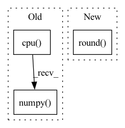

Pattern ID :42245

Before Change
for i in range(len(detections)):
// convert tensor to numpy array
detections[i] = detections[i].cpu().numpy()
// Extract boxes from predictions
detections[i][:, :4] = rescale_boxes(
detections[i][:, :4], ori_shape, input_shape)
After Change
// detections[i] = detections[i].cpu().numpy()
// Extract boxes from predictions
detections[i][:, :4] = ops.scale_boxes(input_shape, detections[i][:, :4], ori_shape).round()
// detections[i][:, :4] = rescale_boxes(
// detections[i][:, :4], ori_shape, input_shape)
return detections
In pattern: SUPERPATTERN
Frequency: 3
Non-data size: 3
Instances
Fragment ID: 118871815
Project Name: augmentedstartups/as-one
Commit Name: 37de4fbaee82f479c5ca8d53a2450c7083056ef1
Time: 2023-01-16
Author: umair.imran@axcelerate.ai
File Name: asone/detectors/yolov8/utils/yolov8_utils.py
M Class Name: AnonimousClass
N Class Name: AnonimousClass
M Method Name: process_output(8)
N Method Name: process_output(11)
M Parent Class:
N Parent Class:
M File Name: asone/detectors/yolov8/utils/yolov8_utils.py
N File Name: asone/detectors/yolov8/utils/yolov8_utils.py
M Start Line: 27
M End Line: 52
N Start Line: 25
N End Line: 39
'>
Before Change
shape [3,H,W] (channels-first), and that it has values in [0,1].
assert isinstance(rgb_tensor, th.Tensor)
assert rgb_tensor.ndim == 3 and rgb_tensor.shape[0] == 0, rgb_tensor.shape
np_array = rgb_tensor.detach().cpu().numpy()
chans_last = np_array.transpose((1, 2, 0))
pil_image = Image.fromarray(chans_last)
dir_path = os.path.dirname(file_path)
if dir_path:
After Change
assert isinstance(rgb_tensor, th.Tensor)
assert rgb_tensor.ndim == 3 and rgb_tensor.shape[0] == 3, rgb_tensor.shape
detached = rgb_tensor.detach()
rgb_tensor_255 = (detached.clamp(0, 1) * 255).round()
chans_last = rgb_tensor_255.permute((1, 2, 0))
np_array = chans_last.detach().byte().cpu().numpy()
pil_image = Image.fromarray(np_array)
dir_path = os.path.dirname(file_path)
'>
Fragment ID: 118871814
Project Name: humancompatibleai/eirli
Commit Name: 6d94c5a0733daf525418f7589b8e34df333509ff
Time: 2020-12-01
Author: sam@qxcv.net
File Name: src/il_representations/utils.py
M Class Name: AnonimousClass
N Class Name: AnonimousClass
M Method Name: save_rgb_tensor(2)
N Method Name: save_rgb_tensor(2)
M Parent Class:
N Parent Class:
M File Name: src/il_representations/utils.py
N File Name: src/il_representations/utils.py
M Start Line: 117
M End Line: 119
N Start Line: 117
N End Line: 121
'>
Before Change
shape [3,H,W] (channels-first), and that it has values in [0,1].
assert isinstance(rgb_tensor, th.Tensor)
assert rgb_tensor.ndim == 3 and rgb_tensor.shape[0] == 0, rgb_tensor.shape
np_array = rgb_tensor.detach().cpu().numpy()
chans_last = np_array.transpose((1, 2, 0))
pil_image = Image.fromarray(chans_last)
dir_path = os.path.dirname(file_path)
if dir_path:
After Change
assert isinstance(rgb_tensor, th.Tensor)
assert rgb_tensor.ndim == 3 and rgb_tensor.shape[0] == 3, rgb_tensor.shape
detached = rgb_tensor.detach()
rgb_tensor_255 = (detached.clamp(0, 1) * 255).round()
chans_last = rgb_tensor_255.permute((1, 2, 0))
np_array = chans_last.detach().byte().cpu().numpy()
pil_image = Image.fromarray(np_array)
dir_path = os.path.dirname(file_path)
'>
Fragment ID: 118871811
Project Name: humancompatibleai/eirli
Commit Name: 35df0073e364a3d277354f26ba75121e1e5b0f8f
Time: 2020-12-01
Author: sam@qxcv.net
File Name: src/il_representations/utils.py
M Class Name: AnonimousClass
N Class Name: AnonimousClass
M Method Name: save_rgb_tensor(2)
N Method Name: save_rgb_tensor(2)
M Parent Class:
N Parent Class:
M File Name: src/il_representations/utils.py
N File Name: src/il_representations/utils.py
M Start Line: 117
M End Line: 119
N Start Line: 117
N End Line: 121